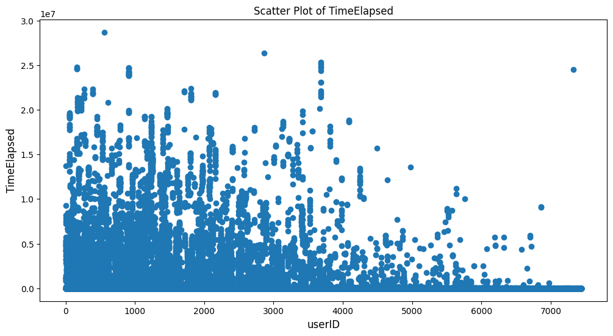
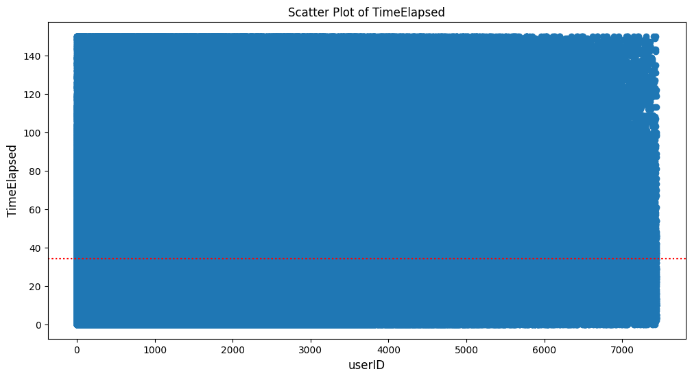
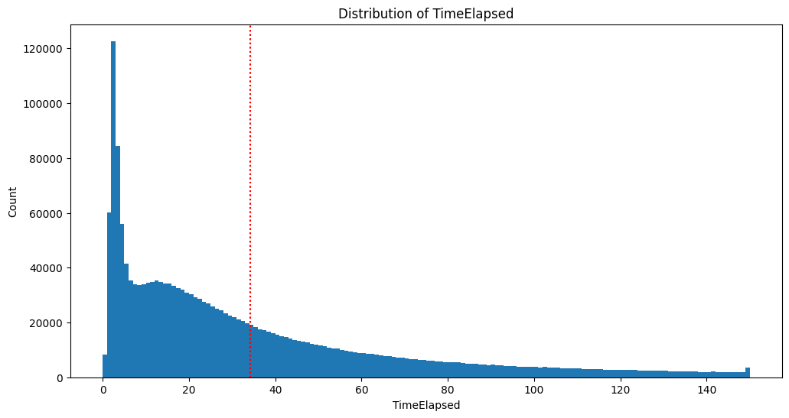
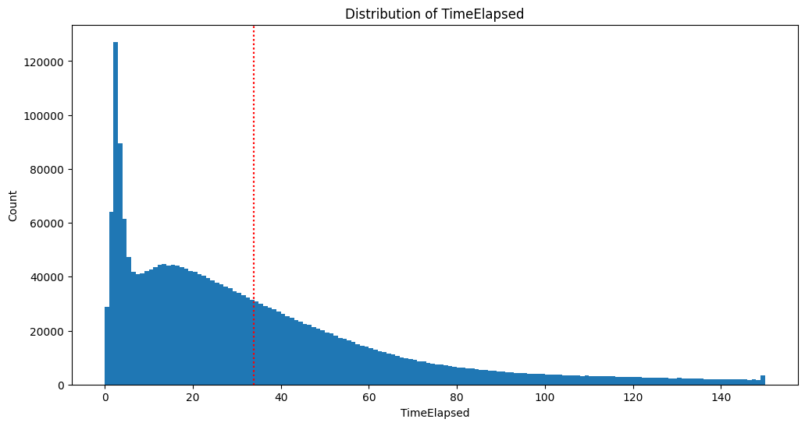
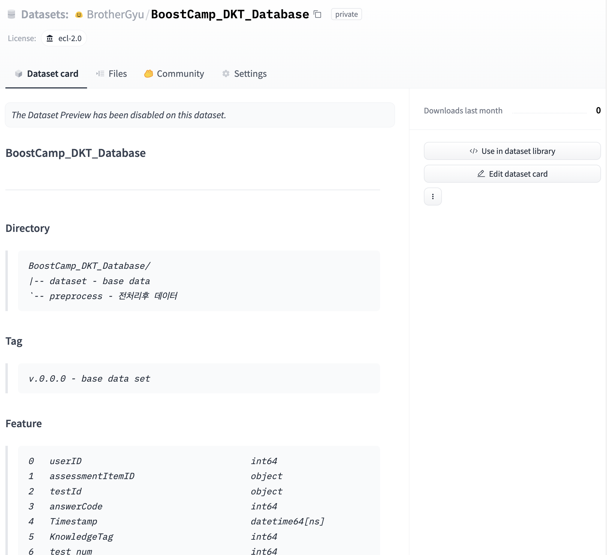
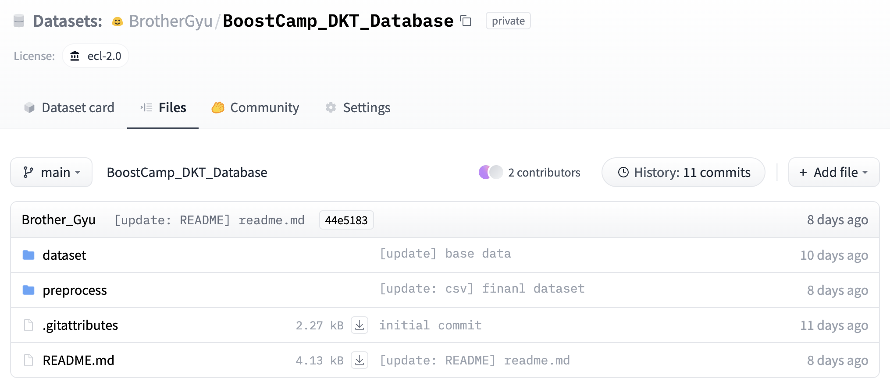

[Project] DKT 대회 - EDA
Week 09 ~ 12 [2023.05.02 ~ 2023.05.25] 동안 진행했던 네이버 커넥트재단 Deep Knowledge Tracing 대회를 진행하며 했었던 데이터셋 전처리 과정을 기록합니다.
Deep Knowledge Tracing EDA
Dataset 전처리 + ML학습을 위한 전처리
sequence데이터로 학습하기에 ML 알고리즘으로는 어려움이 있다
test데이터가 각각 특정한 유저가 푼 문제와 마지막 풀어야 할 문제로 구성되어 하나로 묶여있는 sequence데이터 형식이다
그대로 사용하면 예측해야 유저가 train에 아예 포함되지 않는 cold start 문제가 발생하여 데이터셋을 별도로 구성해야 한다- 목표 [협업을 위한 공통 데이터셋 : 피처를 최대한 다양하게 만들어 필요한 부분을 선택하여 사용하도록 데이터셋 전처리]
01_ 데이터 schema
-
train_data.csv [2266586 rows × 6 columns]
userID assessmentItemID testId answerCode Timestamp KnowledgeTag 0 0 A****1 A05***1 1 ****-**-** **:**:** 2626 1 0 A****2 A05***1 1 ****-**-** **:**:** 2626 2 0 A****3 A05***1 1 ****-**-** **:**:** 2625 … … … … … … … 2266584 7441 A****1 A04***0 0 ****-**-** **:**:** 2625 2266585 7441 A****1 A04***0 1 ****-**-** **:**:** 2623 -
test_data.csv [260114 rows × 6 columns]
userID assessmentItemID testId answerCode Timestamp KnowledgeTag 0 3 A****1 A05***3 1 ****-**-** **:**:** 2626 1 3 A****2 A05***3 1 ****-**-** **:**:** 2626 2 3 A****3 A05***3 -1 ****-**-** **:**:** 2625 … … … … … … 260112 7439 A****6 A04***0 1 ****-**-** **:**:** 8244 260113 7439 A****7 A04***0 -1 ****-**-** **:**:** 8832
02_ EDA
02_01 Create Dataset [Create Dataset [Dataset Merge / Submission Dataset]
-
train_data와 test_data 결합
train_test_dataset = pd.concat([train_data, test_data], ignore_index=True) train_test_dataset = train_test_dataset.reset_index(drop=True) # index 초기화 -
추가로 시도하였지만 제거했던 것
# 같은 유저가 같은 시험지, 문제를 풀었을 경우 최신 데이터만 남기고 이전 데이터를 제거하는 코드 train_test_dataset.drop_duplicates(subset=['userID', 'assessmentItemID', 'testId'], keep='last', inplace=True)ML은 sequence데이터처리의 성능이 좋지 않을 것이라 예상을 하여 같은 문제를 푼적이 있다면 이전 데이터를 제거하는 방식으로 전처리를 하여 실험을 하였지만, 2526700 -> 2476706로 1.98%의 데이터가 감소하였고, categorical 데이터로 처리 하였을 때 다양성이 줄어들어 성능이 떨어졌다
-
result [train_test_dataset.info(show_counts=True)]
<class 'pandas.core.frame.DataFrame'> RangeIndex: 2526700 entries, 0 to 2526699 Data columns (total 6 columns): # Column Non-Null Count Dtype --- ------ -------------- ----- 0 userID 2526700 non-null int64 1 assessmentItemID 2526700 non-null object 2 testId 2526700 non-null object 3 answerCode 2526700 non-null int64 4 Timestamp 2526700 non-null object 5 KnowledgeTag 2526700 non-null int64 dtypes: int64(3), object(3) memory usage: 115.7+ MB결측치가 없는 것을 확인하고 결측치 처리과정 생략
02_02 시험지 번호, 문제 번호, 대분류 카테고리 생성
assessmentItemIDex_A080080003의 index=2 문자는 1-9 범위의 대분류이다
-
시험지 번호, 문제 번호 [사용 안함]
train_test_dataset['test_num']=train_test_dataset['assessmentItemID'].str[4:7].astype(int) train_test_dataset['question_num']=train_test_dataset['assessmentItemID'].str[7:].astype(int)시험지 번호와 문제 번호가 의존성이 있어 함께 사용되어야 문제를 구분할 수 있기 때문에 오용을 방지하기 위해 개인적으로 배제하고 실험
-
대분류 카테고리
train_test_dataset['LargeCategory'] = train_test_dataset['assessmentItemID'].str[2] train_test_dataset['LargeCategory'] = train_test_dataset['LargeCategory'].astype(int) # 정수화1 ~ 9 범위로 데이터의 개수에 비해 분류 가짓수가 작아 전처리 내에서는 사용하지 않고 모델링 실험에만 사용
02_03 TimeStamp
-
base code
diff = df.loc[:, ['userID', 'Timestamp']].groupby('userID').diff().fillna(pd.Timedelta(seconds=0)) diff = diff.fillna(pd.Timedelta(seconds=0)) diff = diff['Timestamp'].apply(lambda x: x.total_seconds()) df['elapsed'] = diff- 코드 문제점
1. 결측치가 생기게 되는 첫 번째 값은 0으로 다 채워서 첫번째 문제는 푼 시간이 0이 나오는 문제 발생
2. groupby를userID로만 하면서 다음 시험지까지 시간차가 있는 경우에도 그대로 diff() 함수가 적용되어 오차 발생
3. 문제 푸는 시간은 다음 문제로 넘어가는 시간을 기준으로 해야하는 데 diff()만 사용하면 해당 줄 기준으로 앞줄 시간을 빼서 한 칸씩 밀린다 -
update code
train_test_dataset['Timestamp'] = pd.to_datetime(train_test_dataset['Timestamp']) time_diff = train_test_dataset.loc[:, ['userID','testId', 'Timestamp']].groupby(['userID', 'testId']).diff(periods=-1).abs() time_diff = time_diff['Timestamp'].apply(lambda x: x.total_seconds()) train_test_dataset['TimeElapsed'] = time_diff- 해결 과정
1. nan결측치로 방치 -> 추가로 전처리로 연결
2. groupby를userID,testId를 기반으로 적용하여 유저아이디를 기반으로 시험지 아이디로 추가적으로 분리
3. .diff(periods=-1).abs()로 수정하여 앞에 값에 뒤에 값을 빼고 절대값으로 변경한다 -
train_test_dataset [2526700 rows × 8 columns]
userID assessmentItemID testId answerCode Timestamp KnowledgeTag LargeCategory TimeElapsed 0 0 A****1 A05***1 1 ****-**-** **:**:** 7224 6 3 1 0 A****2 A05***1 1 ****-**-** **:**:** 7225 6 8 2 0 A****3 A05***1 1 ****-**-** **:**:** 7225 6 7 3 0 A****4 A05***1 1 ****-**-** **:**:** 7225 6 7 … … … … … … … … …
02_04 TimeElapsed Outlier 처리
주요 사항
outlier를 처리하기 위해 앞뒤 값을 잘라내는 경우가 있다
최소값은 0부터 시작하지만 문제를 찍는 다면 짧을 시간이 나올 수 있어, 유효한 값이다
하지만 최대값의 경우에는 문제를 푸는 것에 비해서 정상범위를 벗어난 값들이 있어 상위 값들은 모델의 학습에 방해가 될 만한 값들이였다해결 방법
사분위수 기준으로 outlier 값들을 nan으로 처리하여 결측치로 변환하였다
-
train_test_dataset[‘TimeElapsed’].describe()
count 2119511.0000 mean 17075.7388 std 387221.2765 min 0.0000 25% 10.0000 50% 27.0000 75% 66.0000 max 28695878.0000 Name: TimeElapsed, dtype: float64TimeElapsed값은 0부터 28,695,878까지 다양하게 분포되어 있음을 알 수 있다.
평균 경과 시간은 약 17,075.74이고, 표준 편차는 387,221.28로 상당히 큰 값이다.
백분위수를 통해 대부분의 수치들은 상대적으로 짧은 경과 시간을 갖는 반면, 최댓값을 기록하는 일부 관측값은 훨씬 더 긴 경과 시간을 갖고 있음을 알 수 있다. -
전처리 전 scatter 그래프

-
사분위수 기준 Outlier 제거 함수 코드
# 이상치 처리 함수 def _handle_outliers(df: pd.DataFrame, column: str)->pd.DataFrame: # 사분위수 계산 q1 = df[column].quantile(0.25) q2 = df[column].quantile(0.5) # 추가: 중위값 - 사용은 안함 q3 = df[column].quantile(0.75) # IQR 계산 iqr = q3 - q1 # 상위 이상치 처리 upper_bound = q3 + 1.5 * iqr df[column] = df[column].apply(lambda x: np.nan if x > upper_bound else x) print(f"q1: {q1}, q2: {q2}, q3: {q3}, iqr: {iqr}, upper_bound: {upper_bound}") return df train_test_dataset = _handle_outliers(train_test_dataset, 'TimeElapsed')- output -
q1: 10.0, q2: 27.0, q3: 66.0, iqr: 56.0, upper_bound: 150.0 -
신뢰구간 95% 함수 코드
from scipy.stats import t def _calculate_confidence_interval(df: pd.DataFrame, target_column:str, confidence_level=0.95)-> tuple: # 평균과 표준편차 계산 mean = df[target_column].mean() std = df[target_column].std() # 데이터 개수와 신뢰수준 설정 n = len(df) # 신뢰구간 계산 t_critical = t.ppf((1 + confidence_level) / 2, df=n-1) margin_of_error = t_critical * std / np.sqrt(n) confidence_interval = (mean - margin_of_error, mean + margin_of_error) print("Mean:", mean) print("Standard Deviation:", std) print("Confidence Interval ({}%):".format(confidence_level * 100), confidence_interval) return confidence_interval confidence_interval = _calculate_confidence_interval(train_test_dataset, 'TimeElapsed', 0.95)- output -
Mean: 34.22725368509248
Standard Deviation: 33.77893776146775
Confidence Interval (95.0%): (34.185603450952044, 34.26890391923291) -
outlier 제거 후 scatter 그래프 [유저아이디 / 시간]

-
outlier 제거 후 hist 그래프 [시간 / 빈도]

02_05 TimeElapsed 결측치 채우기
userID,assessmentItemID,testId,KnowledgeTag,LargeCategory를 기준으로 각 피처당TimeElapsed평균 값으로 새 피처 생성
-
nan을 채우기 위한 전과정
def _fill_nan_process(dataset: pd.DataFrame, columns_list: list) -> pd.DataFrame: for name in columns_list: create_column_name = name + '_time_average' time_average = dataset.groupby(name)['TimeElapsed'].mean() dataset[create_column_name] = train_test_dataset[name].map(time_average) return dataset columns = ['userID', 'assessmentItemID', 'testId', 'KnowledgeTag', 'LargeCategory'] train_test_dataset = _fill_nan_process(train_test_dataset, columns)columns당 같은 값을 가진 group의 시간 평균을 추가 해주는 함수
… TimeElapsed userID_time_average assessmentItemID_time_average testId_time_average KnowledgeTag_time_average LargeCategory_time_average 0 … 3 30.5714 10.587 17.9805 12.4831 37.1284 1 … 8 30.5714 19.8776 17.9805 22.2376 37.1284 2 … 7 30.5714 17.6694 17.9805 22.2376 37.1284 3 … 7 30.5714 14.065 17.9805 22.2376 37.1284 4 … … … … … … … -
결측치 확인
... TimeElapsed 626612 userID_time_average 0 assessmentItemID_time_average 7050 testId_time_average 0 KnowledgeTag_time_average 0 LargeCategory_time_average 0 dtype: int64assessmentItemID에서 마지막 문제인 경우에는 풀이 시간을 알수 없어 assessmentItemID_time_average에서 NaN값이 생성됨
-
결측치 처리 함수 코드 [선형회귀 모델 사용]
먼저
assessmentItemID_time_average의 결측치를 치운 후ItemID_time_average의 값을 함께 포함한 평균으로TimeElapsed를 채운다
결측치가 없는 행과 변수들을 활용하여 회귀 모델 피팅
NaN값이 존재하는 행을 제거한 다음 학습을 진행한 다음 NaN값이 있는 행들을 model.predict를 통해 예측하여 결측치를 채운다from sklearn.linear_model import LinearRegression def _predict_missing_with_regression(df: pd.DataFrame, target_column: str) -> pd.DataFrame: """ 결측치가 있는 변수를 선형 회귀 모델을 사용하여 예측 Args: df (pd.DataFrame): 결측치를 예측할 데이터프레임 target_column (str): 예측 대상 변수 이름 Returns: pd.DataFrame: 결측치가 채워진 변수 열 """ # 결측치가 없는 행과 변수들을 활용하여 회귀 모델 피팅 train_data = df.dropna() X = train_data.drop(columns=[target_column]) y = train_data[target_column] model = LinearRegression() model.fit(X, y) # 결측치를 예측하기 위해 회귀 모델을 활용 missing_data = df[df[target_column].isnull()].drop(columns=[target_column]) predicted_values = model.predict(missing_data) # 예측된 값으로 결측치 채우기 df.loc[df[target_column].isnull(), target_column] = predicted_values # 0 미만의 값들을 0으로 처리 df.loc[df[target_column] < 0, target_column] = 0 return df[target_column] # 결측치 예측 및 채우기 df = train_test_dataset[['userID_time_average', 'assessmentItemID_time_average', 'testId_time_average', 'KnowledgeTag_time_average', 'LargeCategory_time_average']] train_test_dataset['assessmentItemID_time_average'] = _predict_missing_with_regression(df, 'assessmentItemID_time_average') df = train_test_dataset[['TimeElapsed', 'userID_time_average', 'assessmentItemID_time_average', 'testId_time_average', 'KnowledgeTag_time_average', 'LargeCategory_time_average']] train_test_dataset['TimeElapsed'] = _predict_missing_with_regression(df, 'TimeElapsed').astype(int)먼저
assessmentItemID_time_average의 결측치를 채우고TimeElapsed를 채운다 -
결측치 처리 완료
# TimeElapsed 정수화 train_test_dataset['TimeElapsed'] = train_test_dataset['TimeElapsed'].astype(int) # 계산이 끝난 columns 제거 train_test_dataset.drop(['userID_time_average', 'assessmentItemID_time_average', 'testId_time_average', 'KnowledgeTag_time_average', 'LargeCategory_time_average'], axis=1, inplace=True) train_test_dataset -
TimeElapsed_category 생성
# 10을 기준으로 카테로리 생성 [0 ~ 15] 범위 train_test_dataset['TimeElapsed_category'] = train_test_dataset['TimeElapsed'] // 10 sorted(train_test_dataset['TimeElapsed_category'].unique())- output - [0, 1, 2, 3, 4, 5, 6, 7, 8, 9, 10, 11, 12, 13, 14, 15]
-
결측치 처리 완료 후 hist 그래프 [시간 / 빈도]

- output - Mean: 34.22725368509248 -> 33.83793445996755
Standard Deviation: 33.77893776146775 -> 30.874327640807945
Confidence Interval (95.0%): (34.185603450952044, 34.26890391923291) -> (33.79986567923061, 33.87600324070449) -
Timestamp 결측치 처리 완료
userID answerCode Timestamp KnowledgeTag LargeCategory TimeElapsed TimeElapsed_category count 2.5267e+06 2.5267e+06 2526700 2.5267e+06 2.5267e+06 2.5267e+06 2.5267e+06 mean 2083.08 0.654151 2020-07-18 15:59:12.793359104 4909.09 4.70513 33.8379 2.96018 min 0 -1 2019-12-31 15:08:01 23 1 0 0 25% 800 0 2020-05-19 05:24:21.750000128 1934 3 11 1 50% 1748 1 2020-07-30 07:12:41 5258 5 26 2 75% 3034 1 2020-09-21 11:48:52 7913 7 47 4 max 7441 1 2020-12-29 16:46:21 11271 9 150 15 std 1585.56 0.476263 nan 3303 2.43182 30.8743 3.07131
03_ FeatureEngineering
train_test_dataset['answerCode'] = np.where(train_test_dataset['answerCode'] == -1, np.nan, train_test_dataset['answerCode'])
먼저 answerCode의 -1을 nan으로 처리하여 함께 평균에 포함되어 연산되지 않도록 한다
03_01 Timestamp
def _datetime_process(df: pd.DataFrame):
# 년도 (Year) 추출
df['year'] = df['Timestamp'].dt.year
# 월 (Month) 추출
df['month'] = df['Timestamp'].dt.month
# 일 (Day) 추출
df['day'] = df['Timestamp'].dt.day
# 요일 (Weekday) 추출 - [0~6] 월 ~ 일
df['weekday'] = df['Timestamp'].dt.weekday
# 시간 (hour) 추출
df['hour'] = df['Timestamp'].dt.hour
return df
train_test_dataset = _datetime_process(train_test_dataset)
Timestamp값들을 세분화한다
04_ 실패 했던 FeatureEngineering
FeatureEngineering에서 예측 모델 학습에서 auc나 accuracy를 1에 가깝게 과적합을 발생시킨 feature들입니다
전 book recommend 대회에서는 예측 모델의 성능 향상을 이루어낸 FeatureEngineering 방식이 였지만 이번에는 [0,1]로 이루어진 분류 문제여서 정답을 기반으로 다른 feature들을 결합하는 순간 새로 생성된 feature들이 정답을 너무 잘 표현한 값들이여서 과적합을 발생시켰습니다
04_01 _columns_to_mean_score 함수 코드
_columns_to_mean_score(df: 데이터프레임, columns_list: 리스트) -> 데이터프레임:
- columns_list 규칙 - *_mean
userID_mean - 같은 유저 아이디별 평균 점수
userID_assessmentItemID_mean - 같은 유저의 같은 문제 평균 점수
userID_testId_mean - 같은 유저의 같은 시험지 평균 점수
def _columns_to_mean_score(df: pd.DataFrame, columns_list: list) -> pd.DataFrame:
create_column_name = '_'.join(columns_list) + '_mean'
# DataFrame을 columns_list로 그룹화한 후, answerCode 열의 평균을 계산하여 새로운 DataFrame average_data를 생성
average_data = df.groupby(columns_list)['answerCode'].mean().reset_index()
# average_data DataFrame의 answerCode 열의 이름을 create_column_name으로 변경
average_data.rename(columns={'answerCode': create_column_name}, inplace=True)
# 평균치라서 결측치는 0.5로 채움
average_data = average_data.fillna(0.5)
# df와 average_data를 columns_list를 기준으로 left 조인하여 병합
df = pd.merge(df, average_data, on=columns_list, how='left')
return df
userID, assessmentItemID, testId, KnowledgeTag, LargeCategory, TimeElapsed_category, weekday, hour 활용하여 feature들을 생성
05_ 전처리 완료
개인 전처리를 완료하고 이후에는 팀원들의 전처리를 추가적으로 합쳐 하나의 데이터셋을 만들고 hugging face datasets를 사용하여 버전관리를 했습니다


- 회고
-
목표
이전의 대회인 book recommend 대회에서는 각자 eda를 하고 예측 모델 생성을 하였기 때문에 같은 모델과 파라미더를 사용해도 결과가 다르게 나오는 시행착오를 겪어 이번에는 공통된 데이터셋을 구성하는 것을 목표로 하였습니다
-
시도한 개선 방식
04_01의 _columns_to_mean_score방식을 구현 하였을 때 전에는 dict로 key:value를 통해서 연산하는 방식을 사용하여 속도가 느렸는데 pandas에 더 익숙해지면서 groupby()등 여러 개념을 활용하여 같은 데이터 처리 시간을 단축시켰습니다
결측치를 처리하는 과정에서 그래프를 보고 임의로 잘라내는 방식을 사용하였는데 이번에는 사분위수를 적용하여 통계학적으로 접근을 하였습니다
추가로 결측치를 처리할 때 평균으로 처리를 하였지만 의존성이 있는 feature들을 생성하여 LinearRegression 모델을 활용하여 채웠습니다 -
학습 과정에서의 교훈
이전에 좋은 결과를 얻었다고 같은 전처리가 항상 좋은 결과를 보장하는 것이 아니라는 점을 배울 수 있었고, 데이터셋의 구조를 파악하고 데이터셋에 맞는 전처리가 필요하다는 것을 배울 수 있었습니다. 다양한 데이터를 접하고 직접 전처리를 하는 것이 실력을 향상 시키는 방법이라는 생각이 들었습니다
댓글남기기